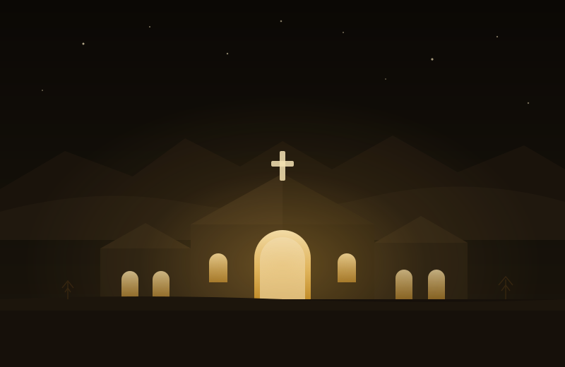
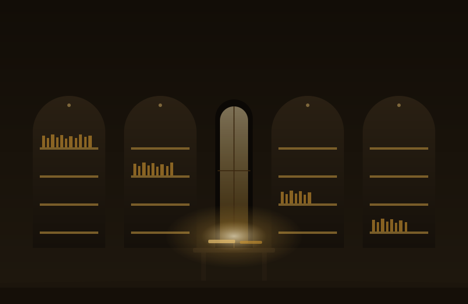

이름의 뜻
이름에 이미 다 들어 있습니다
아둘람은 피난처이고 스콜레는 배움입니다. 두 단어가 이 센터가 하려는 일을 그대로 말합니다.
되었습니까
눌려 있습니까
원통합니까
사백 명이 그 상태로 아둘람에 모였고, 훗날 다윗의 용사가 되었습니다.
ADULLAM
숨어든 자리가 요새가 되다
사무엘상 22장의 아둘람은 다윗이 쫓겨 숨은 바위 굴입니다. 환난 당한 자, 빚진 자, 마음이 원통한 자가 그에게로 모였고, 그 사백 명이 나중에 나라를 세우는 용사가 됩니다.
같은 본문에서 다윗은 이곳을 요새라고도 불렀습니다. 쫓기는 자에게는 피난처였고 지휘관에게는 요새였습니다. 무너지는 중인 사람을 먼저 받고, 그 사람을 다시 세워 내보낸 몇 안 되는 자리입니다.
환난 당한 모든 자와 빚진 모든 자와 마음이 원통한 자가 다 그에게로 모였고 그는 그들의 우두머리가 되었는데 그와 함께한 자가 사백 명 가량이었더라 사무엘상 22장 2절
SCHOLĒ
쉼이 자라 학교가 되다
헬라어 스콜레는 본래 여유와 쉼을 뜻하는 말이었습니다. 이 단어가 라틴어 schola를 거쳐 오늘날의 school이 되었습니다. 쉼이 배움의 어머니라는 사실이 단어의 뿌리에 그대로 남아 있습니다.
그래서 이 센터는 배움부터 시작하지 않습니다. 지친 사람에게는 배울 그릇이 없기 때문입니다. 먼저 쉬게 하고, 그다음에 가르칩니다. 순서가 곧 교육철학입니다.
지쳐서 들어와
용사로 나갑니다
커리큘럼
다섯 개의 축으로 세웁니다
기독교적, 인문학적, 신학적 렌즈로 지혜와 통찰을 얻게 하고, 여기에 실무 기법과 앞서 산 사람들의 발자취를 더합니다.
성경은 일과 돈과 사람을 어떻게 말하는가
왜 그것이 그러한가, 소명과 안식의 신학
인간은 어떤 존재인가, 고전이 답한 것들
월요일 아침 회의실에서 무엇을 하는가
실제로 그렇게 산 경영인이 있었는가
학습 동선
피난처로 들어와
요새에서 나갑니다
히브리어 이름을 그대로 쓴 다섯 단계입니다. 쉼이 배움보다 먼저 옵니다.
진단과 첫 면담. 지금 어디에 서 있는지를 마주합니다.
1일강의 없는 합숙. 오직 쉼과 침묵과 회복입니다.
1박 2일다섯 축 정규 과정. 조찬 또는 석찬으로 모입니다.
12주앞서 산 기독경영인의 자리를 직접 걷습니다.
1박 2일수료 후 1년 밀착 동행. 혼자 두지 않습니다.
12개월세 개의 과정
현직과 예비와 조력자,
초점이 다릅니다
현직 기독경영인
판단력, 소명, 조직을 다룹니다. 다섯 축 전체를 통과하는 정규 과정입니다.
12주 정규 · 합숙 2회 · 수료 후 1년 동행
예비 경영인, 창업 준비자
기초 소양과 실무 기법에 무게를 둡니다. 본과와 강의를 일부 공유합니다.
8주 정규 · 합숙 1회
목회자, 전문인
경영인을 이해하고 돕는 법을 배웁니다. 성도의 사업을 어떻게 대할 것인가를 다룹니다.
4주 집중
12주 회차별 구성, 실무 기법 다섯 모듈, 기독경영인 위인 일곱 사람의 사례연구, 합숙 일과표까지 전체 과정을 따로 정리해 두었습니다.
센터
이런 처소를 그리고 있습니다
배우는 공간과 쉬는 공간과 기도하는 공간이 한 자리에 있어야 이 커리큘럼이 작동합니다. 아래는 건립 시 갖추고자 하는 모습을 그린 상상도입니다.


아직 부지가 정해지지 않았습니다. 위 그림은 사진이 아니라 건립 시 갖추고자 하는 모습을 그린 상상도입니다.
여섯 가지 기도제목
아둘람 스콜레 건립을 위해
기도해 주십시오
터도, 날짜도, 사람도 아직 채워지지 않았습니다. 여섯 가지를 놓고 함께 구합니다.
처소는 사람이 짓는 것이 아니라,
예비된 곳으로 인도받는 것입니다.
기도 동역자로 이름을 올립니다
기도를 부탁드리고 그냥 두지 않겠습니다. 이름을 올려주시면 다음 세 가지를 지키겠습니다.
- 분기에 한 번 건립 진행 상황을 알려드립니다
- 새로운 기도제목이 생기면 바로 전해드립니다
- 오픈이 확정되면 가장 먼저 안내드립니다
건립위원회 섬김이
오랫동안 기도하며
준비해 왔습니다
경영학적, 인문학적, 신학적 관점에서 이 센터를 그려 왔습니다.
- 학위Ph.D. 경영학박사
- 연구산업정책연구원 연구교수
- 강의대학 겸임교수
- 경력28년간 기업 경영, M&A, 세무, 벤처 자문
- 저서심금술 · 설득술 · 설득술 25기법
대표가 아니라 섬김이로 적습니다. 아직 세워지지 않은 곳에 대표를 두는 것은 이른 일이고, 이 단계에 필요한 사람은 앞에 서는 사람이 아니라 자리를 지키는 사람이기 때문입니다.
동역
함께하실 수 있는 세 가지 길
아직 세워지지 않은 터이므로, 지금 필요한 것은 후원이 아니라 기도와 사람입니다.
여섯 가지 기도제목을 놓고 중보해 주십시오. 이 센터가 시작된 자리는 결국 여기가 됩니다.
기도 동역자 등록건립위원으로 참여하거나, 가진 재능과 시간과 자리를 나눠 주십시오. 부지를 아시는 분도 환영합니다.
건립위원 참여 문의언젠가 이곳에서 쉬고 배우기를 원하신다면 미리 이름을 남겨 주십시오. 오픈 시 가장 먼저 알려드립니다.
사전 관심 등록아둘람을 거치지 않은
용사는 없습니다
문의
편하게 연락 주십시오
건립, 동역, 참여에 관한 어떤 문의도 좋습니다.